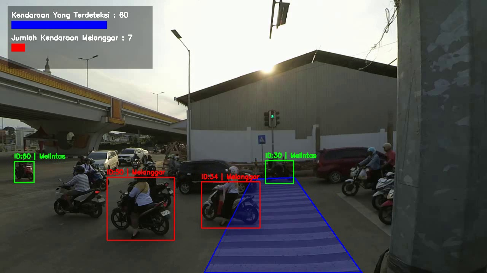
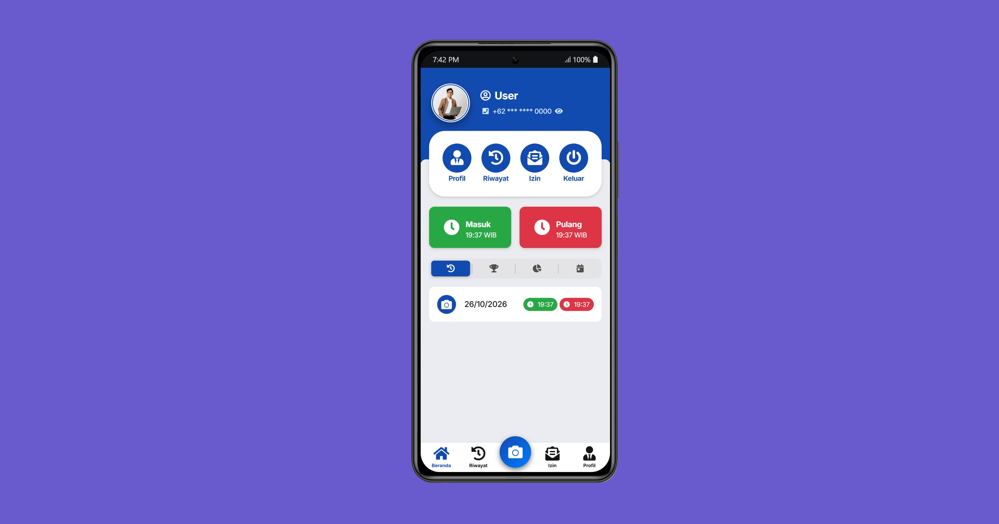
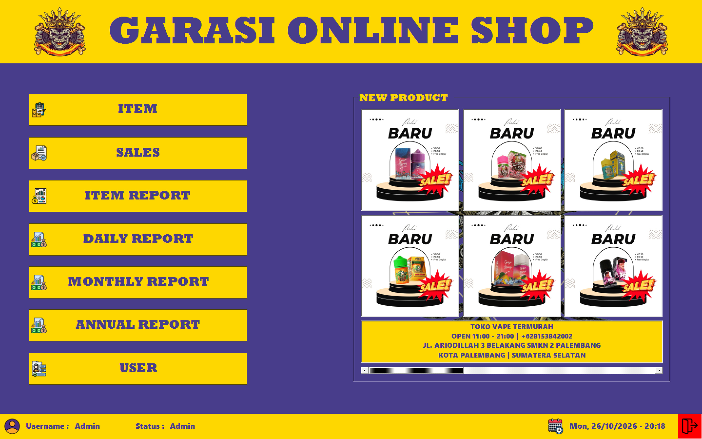
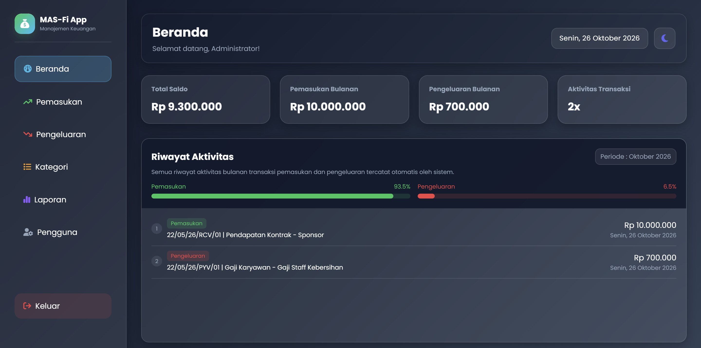
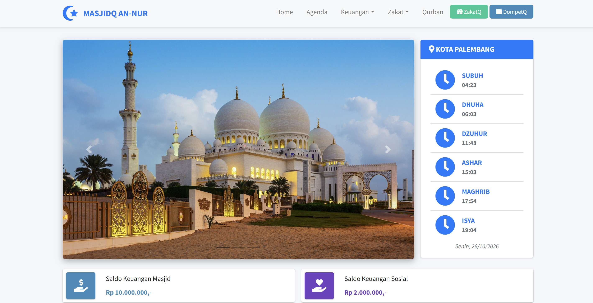

Halo, Saya Muhammad Rian Putra Pratama
Software & Technology Specialist.
Lulusan baru teknik informatika yang berdedikasi tinggi dan memiliki pemahaman mendalam tentang konsep teknologi informasi serta pemecahan masalah. Memiliki kemampuan belajar yang cepat, adaptif terhadap teknologi baru, dan siap memberikan kontribusi terbaik secara profesional dalam lingkungan kerja.
Profil Singkat
Tentang Saya
Fresh graduate yang adaptif, berdedikasi, dan siap berkontribusi dalam menghadirkan solusi teknologi.
Saya adalah lulusan baru sarjana komputer yang memiliki motivasi tinggi untuk membangun karier profesional di bidang teknologi. Selama studi, saya aktif mempelajari fondasi rekayasa perangkat lunak, pengelolaan basis data, logika pemrograman, serta pembelajaran mesin.
Pengalaman saya dibangun melalui pengerjaan proyek teknologi, mencakup pengembangan aplikasi web hingga perangkat lunak desktop. Saya siap beradaptasi dengan alur kerja tim, cepat menguasai teknologi baru, serta bekerja secara teliti dan terorganisir.
Kemampuan Teknis
Keahlian & Penguasaan Teknologi
Programming Language
Tools & Frameworks
Soft Skills
Portofolio Proyek
Proyek & Implementasi
Rangkuman proyek yang di bangun untuk menyelesaikan berbagai permasalahan berbasis teknologi.

Deteksi Pelanggaran Zebra Cross Oleh Kendaraan Sepeda Motor Menggunakan Framework YOLO
Sistem deteksi cerdas berbasis computer vision yang memanfaatkan framework YOLO untuk mengidentifikasi dan memantau pelanggaran lalu lintas di area penyeberangan jalan secara otomatis.

Sistem Absensi Elektronik Karyawan Berbasis Validasi Wajah & Geolocation
Aplikasi absensi elektronik yang memanfaatkan validasi wajah dan deteksi koordinat lokasi secara otomatis. Memudahkan proses pencatatan kehadiran yang akurat, aman, dan dapat diakses dengan cepat melalui perangkat seluler maupun peramban web.

Aplikasi Manajemen Toko Online Berbasis Desktop Menggunakan VB .NET
Aplikasi pengolahan data toko terintegrasi yang dibangun menggunakan visual basic .NET. Memungkinkan pengguna untuk melakukan pencarian produk cepat, manajemen keranjang belanja, pencetakan struk transaksi, serta pemantauan ketersediaan barang di gudang guna meminimalisir kesalahan pencatatan manual.

Aplikasi Monitoring Keuangan & Rekapitulasi Kas Kantor Berbasis Website
Platform web terintegrasi untuk pencatatan dan pengelolaan keuangan kantor secara transparan. Memungkinkan pencatatan transaksi pemasukan dan pengeluaran harian, pengelompokan kategori anggaran, serta penyajian laporan rekapitulasi keuangan berkala guna memudahkan monitoring anggaran secara akurat.

Sistem Digitalisasi Administrasi Kas, Zakat, dan Qurban Masjid
Platform layanan digital berbasis web yang memudahkan jemaah dan masyarakat dalam menunaikan pembayaran kas infak, penyetoran zakat, serta pendaftaran qurban secara online, cepat, dan transparan tanpa harus datang langsung ke sekretariat masjid.
Rekam Jejak Akademis
Pendidikan & Sertifikasi
Pendidikan Formal
S1 Teknik Informatika
Lulus dengan IPK 3.29. Fokus studi pada pemrograman terstruktur, rekayasa perangkat lunak, dan basis data, serta pembelajaran mesin.
Sertifikasi Akademik
TOEFL iBT
Sertifikasi CEFR B2-Upper Intermediate dengan skor 486 untuk mendukung pemahaman instruksi teknis dan berinteraksi secara profesional.
AI Engineer For Milenial
Sertifikasi literasi digital yang mempelajari konsep dasar pemrosesan data, penggunaan tools AI modern, dan penerapan teknologi kecerdasan buatan secara efisien.
Komunikasi
Hubungi Saya
Terbuka untuk kesempatan kerja full-time, kontrak, maupun posisi entry-level.